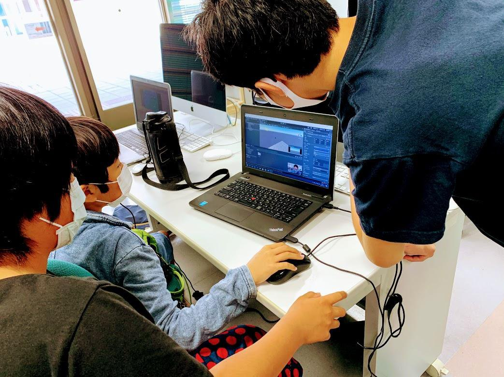
実施期間2020年10月10日〜2021年3月27日
6月から9月にオンライン練習を行い、10月から本開催へ移行しました。
新型コロナウイルス感染症拡大に対応し、オンライン練習期間を経て、オンラインと会場参加を選べるハイブリッド形式で実施されました。
2020年度は、当初4月開始予定だった日程を見直し、4月から5月を準備期間、6月から9月を事前オンライン練習期間、10月から2021年3月を本開催期間として実施しました。参加者はScratchを中心に、Unity、MMD、Minecraftなど、それぞれの関心に応じた作品制作へ取り組みました。

6月から9月にオンライン練習を行い、10月から本開催へ移行しました。
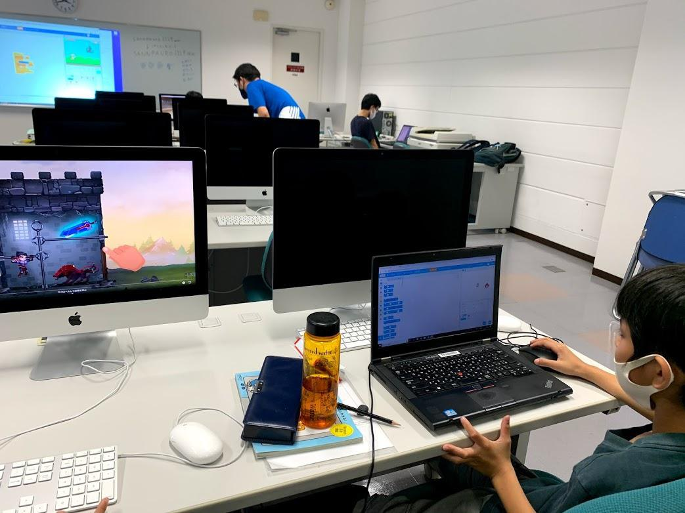
30名定員に73名の応募があり、辞退等を除く実質参加者は23名でした。
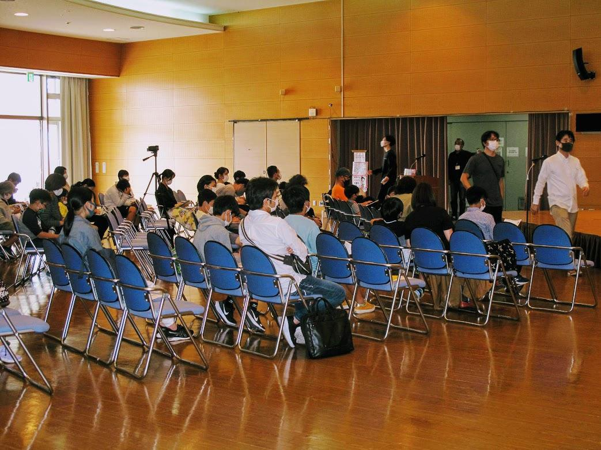
PC・Wi-Fi貸出、オンライン支援、会場参加を組み合わせて学びを継続しました。
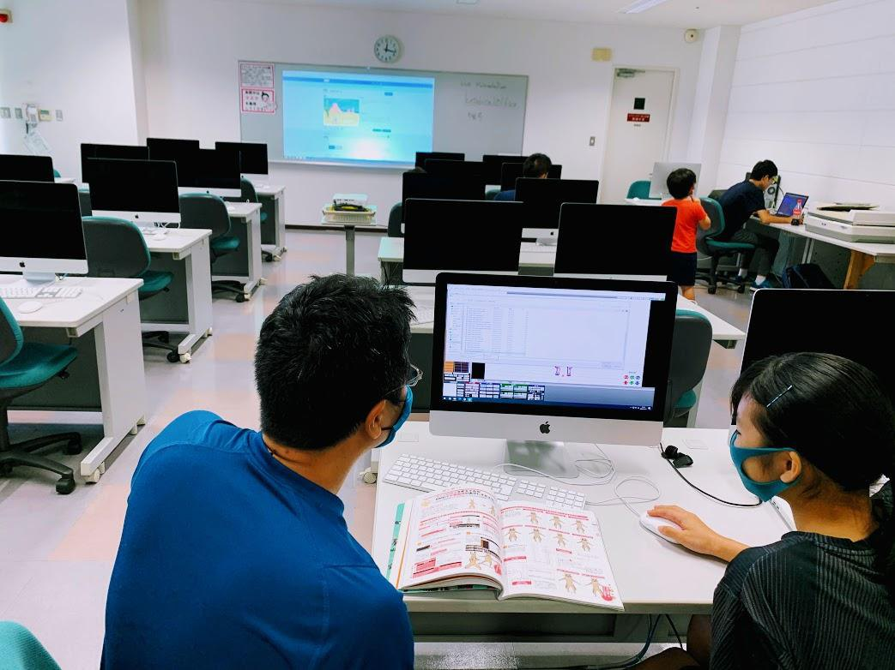
家庭の通信環境調査、レンタル機材の手配、オンライン練習を経て、本開催ではオンライン参加と会場参加を随時選べる形で進めました。
Scratchの基礎教材を配布し、進捗をスプレッドシートで共有しながら、ゲーム・アニメーション制作に取り組みました。12月には中間レビュー、3月には最終成果報告会を実施しました。
オンラインでの接続練習から会場での制作、レビュー、最終発表まで、状況に合わせて学び方を切り替えながら活動しました。
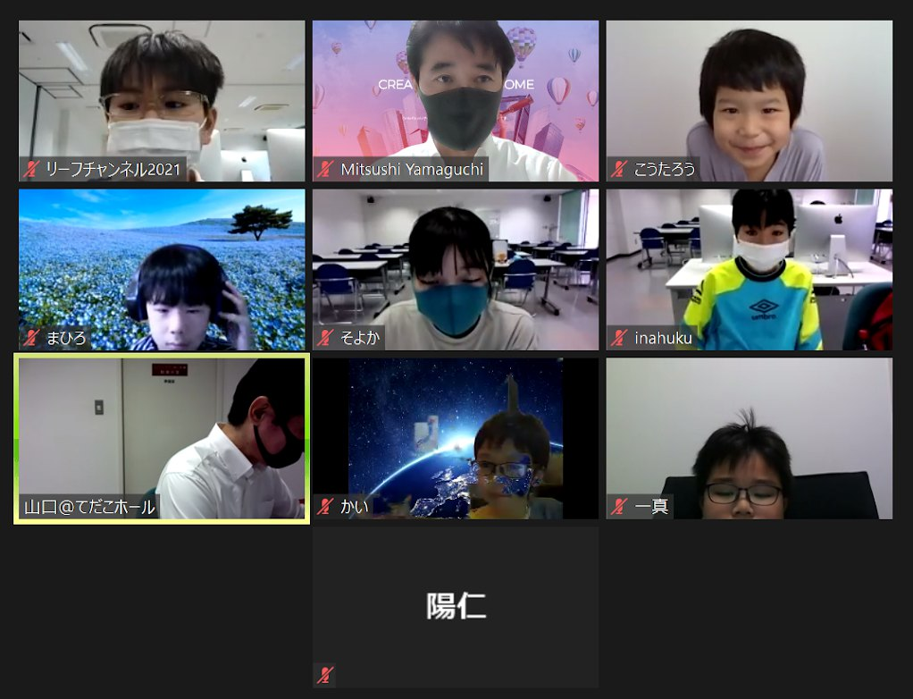
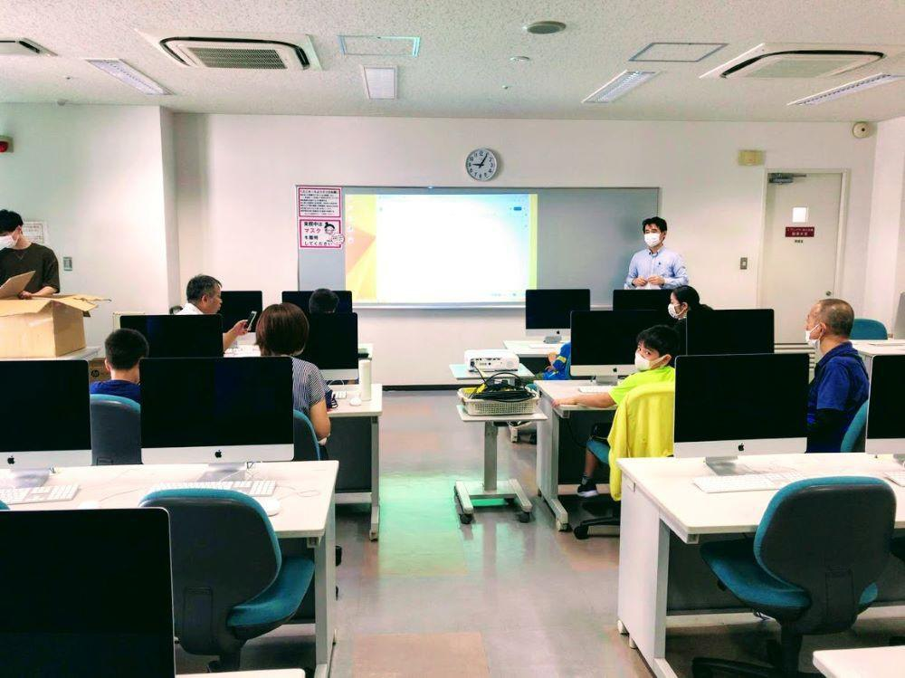
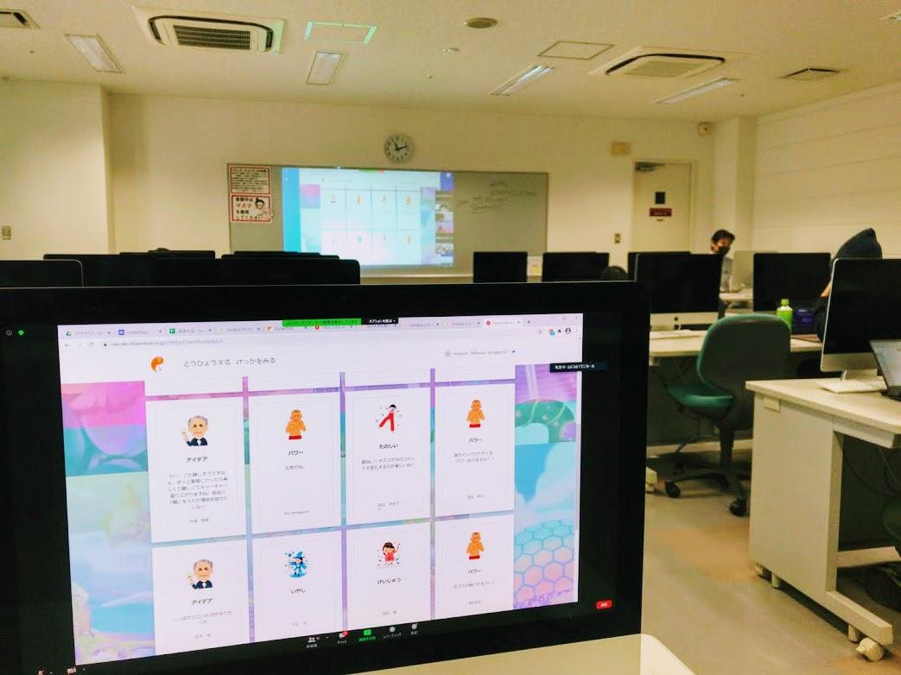
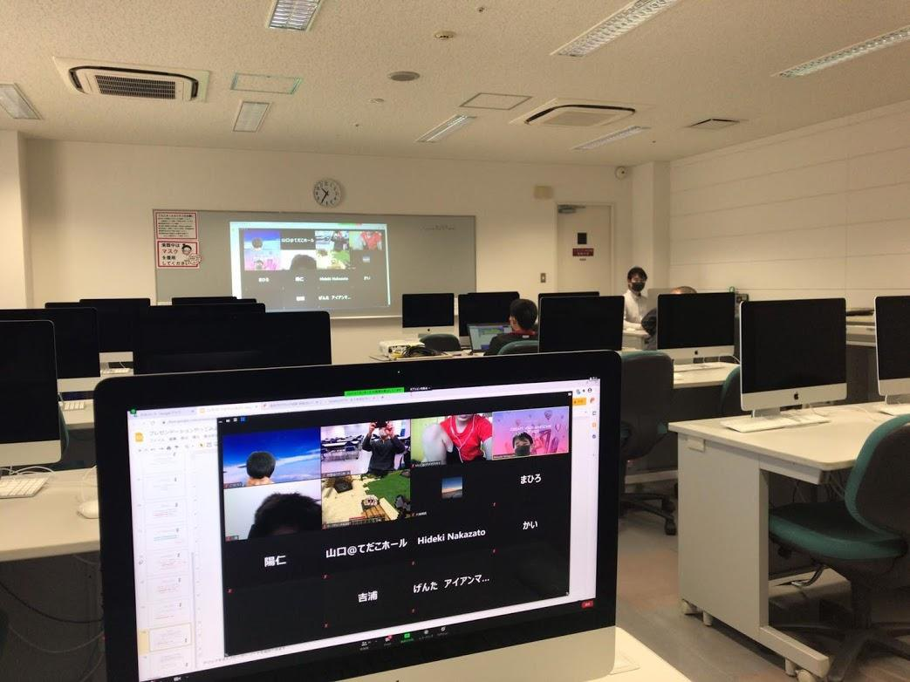
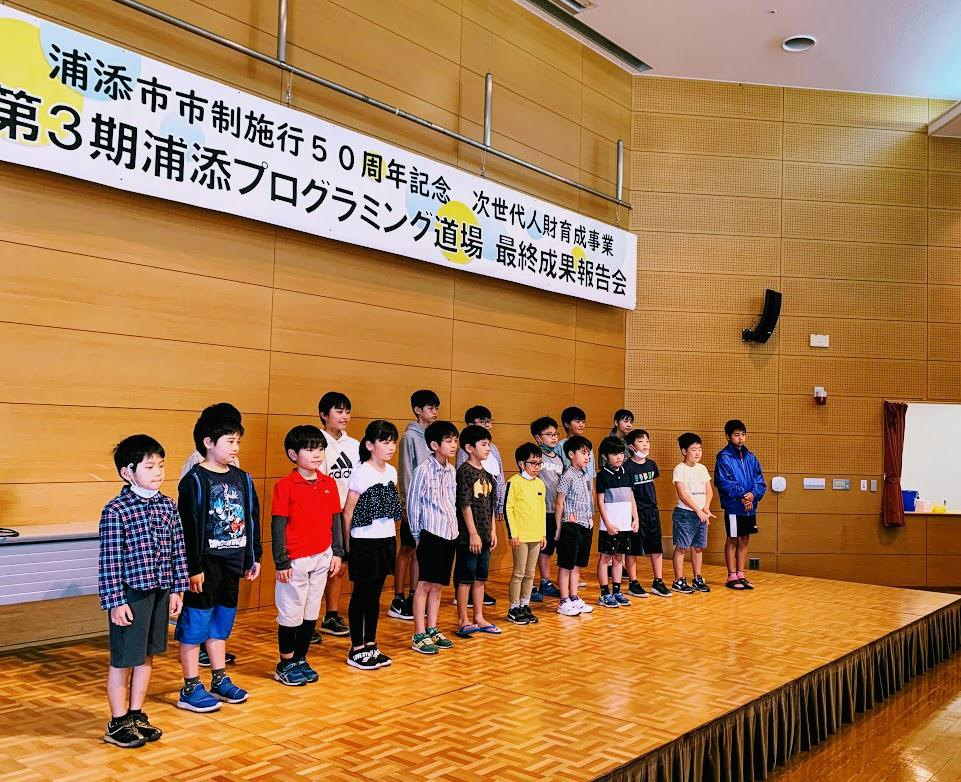

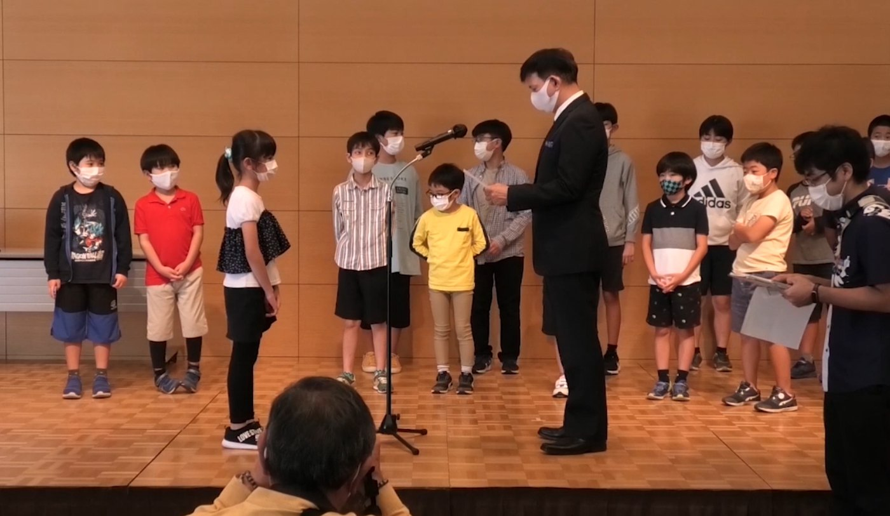
Scratchを中心にしたゲーム・アニメーション制作を進め、レビューで受けた意見をもとに作品を磨き、最終成果報告会で発表しました。
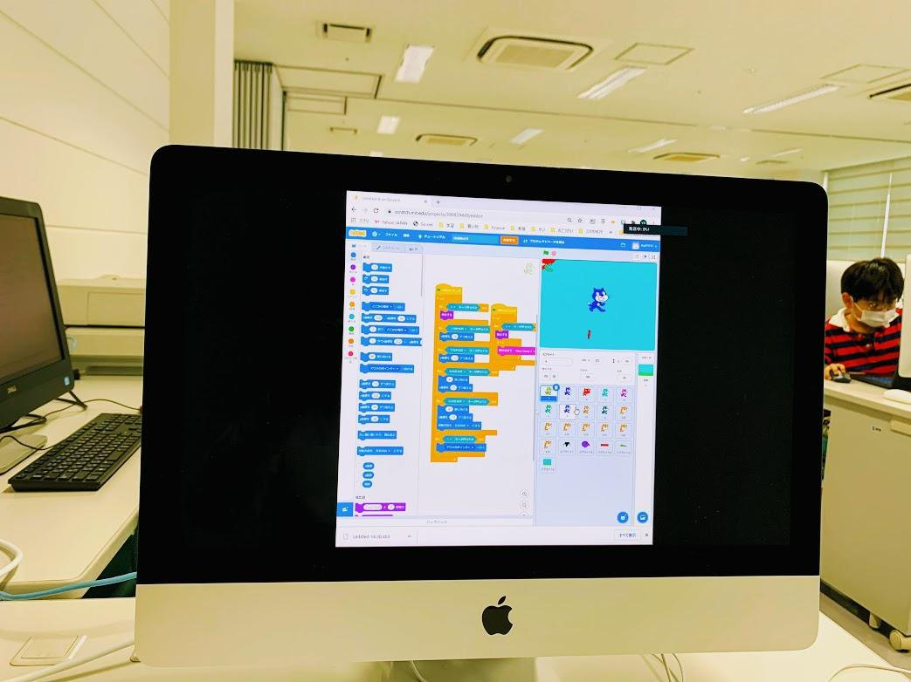
保護者や関係者からフィードバックを受け、作品を改善しながら最終成果報告会につなげました。
クラウド上で進捗を確認し、対面とオンラインの両方で学びを継続しました。